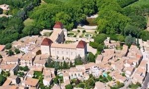
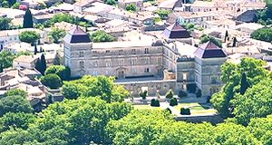
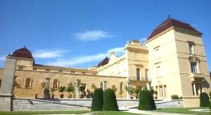
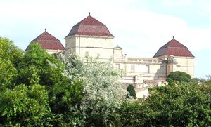
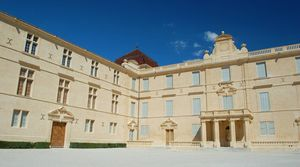

Recensement Jean-Claude Truffet
| Département | 34 — Hérault |
| Canton | Castries |
| Commune | Castries |
| Type d'édifice | Château |
| Période d'origine | XVI |





CASTRIES, le seigneur Dalmace, chevalier croisé et premier possesseur de Castries, participe à la première croisade et meurt en Palestine. Le fief de Castries entre alors, par mariage et testaments, dans le patrimoine de Guilhem VII, seigneur de Montpellier.
En 1495, la famille de la Croix achète la baronnie de Castries à Jean de Pierre. Vers 1520, l'ancien château fort est rasé et reconstruit sur les bases du château actuel, Jacques de La Croix (1536-1575) construit un château de style Renaissance, sous Louis XIV, la famille vient à la Cour et intéresse le duc de Saint-Simon. Le domaine fut nommé en marquisat en 1645. René-Gaspard de La Croix (1611-1674) reste la figure du grand siècle. Alors que son père a connu la disgrâce pour son soutien au duc de Montmorency, pendant les troubles de la Fronde ; il est promu marquis grâce à ses actions valeureuses lors de la guerre de Trente Ans. Il choisit de rénover le château dans le goût de lépoque. A la Révolution, le château sert un temps dhôpital militaire, il est rapidement vendu comme bien national à quatorze propriétaires. Sous séquestre revient aux Castries Armand-Charles -Augustin qui s'est illustré au cours de la guerre de l'indépendance américaine à obtenu le titre de duc et en 1828 son fils 2eime duc de Castries Edmond-Eugène-Philippe-Hercule de La Croix (1787-1866) parvient à racheter une partie du domaine. En 1935, René de La Croix, lécrivain-historien, achète à son tour le château. Il entreprend de le restaurer et décide de retirer le jardin à langlaise de la cour dhonneur, et passa par alliance aux vicomte Harcourt second époux de la duchesse de Castries. En 1985, le château, depuis 1966, est légué à l'Académie française, sur décision de son propriétaire, le comte René de la Croix de Castries, dit « le duc de Castries », héritier de la maison.
Mis en vente en septembre 2013, le domaine devient la propriété de la commune de Castries.
Le château actuel a été construit au XVIIe siècle de style Renaissance. Il comporte deux corps de logis en équerre (un troisième aurait dû terminer le U entourant la cour mais n'a pas été construit). Ces logis sont cantonnés de trois pavillons carrés coiffés de toits à brisés récemment restitués, couverts de tuiles vernissées.
Le château de Castries, nommé « petit Versailles du Languedoc » profite d'un jardin à la française du XVIIe siècle, dessiné par Le Nôtre, jardinier du roi Louis XIV. Il fut alimenté en eau par l'aqueduc, ouvrage unique en France, également classé monument historique conçu par Paul Riquet, ingénieur du canal du Midi. Les voûtes d'ogives du rez-de-chaussée de l'aile nord sont tout ce qui subsiste du château fort rasé en 1622.
De la cour dhonneur, on accède aux grandes terrasses offrant une superbe vue sur les allées en forme détoile, les bassins et un paysage de vignobles. En septembre 2013, le « château phare » de la région a été acheté par la ville de Castries.
Famille de Jacques de La Croix
"
Château de Castrie